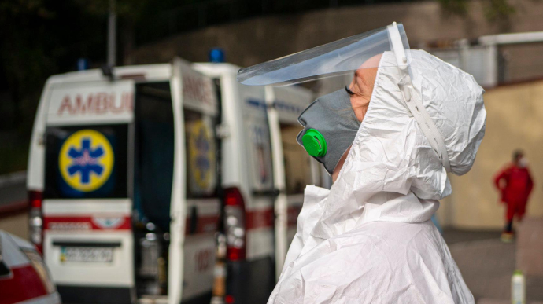
Більше 10 тисяч хворих щодня: в уряді пояснили, коли розгортатимуть COVID-шпиталі
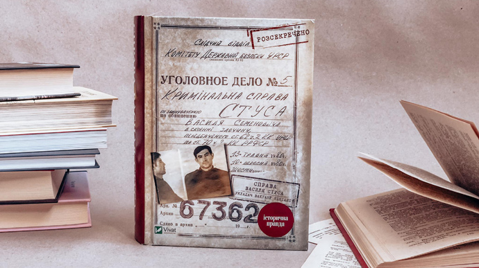
У Зеленського відреагували на рішення суду у справі книги про Стуса
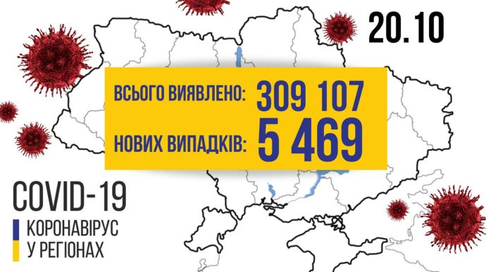
COVID в Україні: 5 469 хворих і 113 смертей за добу
Новини 19 жовтня: Медведчук і Стус, виведені мільярди
Facebook видалив сторінку Деркача
За 3 роки "бізнес шанованих людей" вивів з України $22 мільярди - голова податкової
Усі новини...
коронавірус
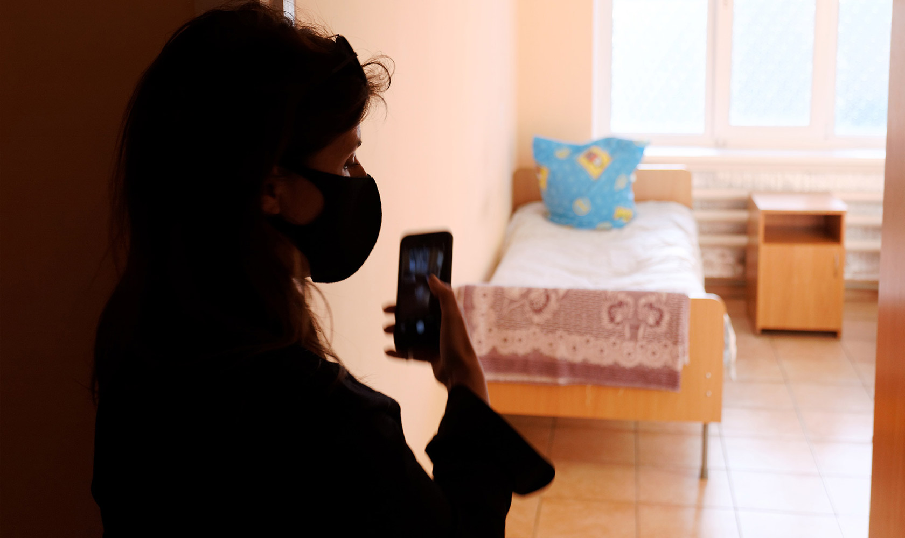
Планета COVID-19: місць і кисню немає, населена вірусами. Як Катя Ножевнікова та її "монстри" рятують людей
Останні новини
14:40
Єврокомісія домовилась з Johnson&Johnson про закупівлю потенційної вакцини
14:26
НАТО проконсультується з Україною при формуванні своєї стратегічної концепції
14:25
Від вибуху на Одещині постраждав кандидат у депутати
Толока УП: вже 30 компаній пропонують ексклюзивні знижки для членів Клубу УП
14:23
Маск розповів про будівництво міста на Марсі
14:18
Суди Росії постановили виселити з Криму близько 600 українців – МЗС
14:04
Опитування "5 питань від Зеленського" профінансує "Слуга народу"
13:54
"Літаюча тарілка" стала пам'яткою архітектури в Україні
13:53
Зеленський підписав закон, необхідний для руху України до НАТО
13:51
Чекаючи спалаху COVID на Львівщині, Кабмін просить у регіонів пропозицій
13:46
В Білорусі озвучили свою версію того, скільки білорусів виїхали до України
13:36
Весілля під час карантину: в Україні одружилося більше пар, ніж розлучилося
13:28
Комітет рекомендує Раді проголосувати за реформу СБУ
13:27
Кремль заявляє, що РФ може забезпечити окупований Крим водою без України
13:15
Державні органи проведуть понад 120 тисяч перевірок підприємств у 2021 році
12:39
Під кінець робочого тижня температура поповзе вгору
12:39
В офісі Зеленського готують кадрові перестановки – джерела
12:32
Кличко: До тепла підключено вже 60% будинків столиці
12:28
Україна зібрала 80% врожаю зернових
12:22
Чому Україна не зможе розробити власну вакцину від COVID-19. Пояснення українського науковця
12:18
У Польщі вперше понад 10 тисяч заражень за добу
12:14
Рожкову позбавили основних повноважень
12:11
Коронавірус у Києві: за добу діагноз підтвердили у 559 осіб, 23 пацієнти померли
11:57
Алієв заявив, що Азербайджан взяв під контроль місто і 24 села
11:43
Вибори-2020: ЦВК попереджає, що підрахунок голосів буде тривалим
11:30
НАТО створить космічний центр у Німеччині
11:25
НАБУ завершило розслідувати привласнення майже мільйона екснардепом Березкіним
11:20
Курс валют на 21 жовтня: міжбанк, "чорний" та готівковий ринки
11:04
Мін'юст США подав антимонопольний позов проти Google
11:00
Шкарлет просить перестати політизувати ЗНО з мови і літератури
10:59
Макрон подзвонив Путіну після обезголовлення вчителя чеченцем
10:55
Дистанція, дезінфекція, контроль здоров'я: як працювати дільницям на виборах
10:45
Степанов хоче контролювати всі медзакупівлі – ЗМІ
10:21
Верховний суд не застосував "антиколомойський закон" до справи Суркісів
09:49
Курс гривні до євро продовжує знижуватися
09:48
У лікарнях із COVID чи його симптомами лежать майже 23 тисячі українців
09:47
Чехія повернула "масковий режим" надворі та не виключає закриття магазинів
09:40
За тиждень на COVID-19 захворіла рекордна кількість людей – ВООЗ
09:25
Кілька музеїв Берліна постраждали від масштабних актів вандалізму - ЗМІ
09:17
В Україні зросли ціни на житло
08:48
Нові антирекорди COVID: в Україні 6 719 хворих за добу і 141 смерть
Усі новини...
Докладно
Шотландський удар по Британії: чи отримає Единбург другий шанс на незалежність
Європейська правда — Олександр Краєв
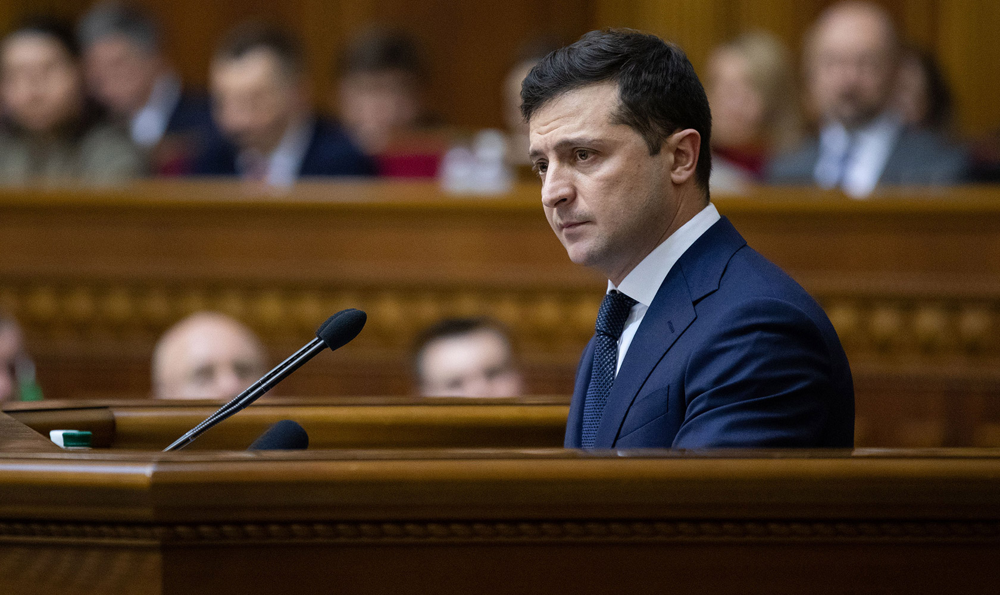
"Моя мрія – сказати українцям, що мені не соромно!". Про що говорив Зеленський у посланні до Ради
Політика — "Українська Правда"
Як держава буде повертати назад 5 мільйонів га землі. Друга частина інтерв'ю з головою Держгеокадастру
Економічна правда — Оксана Пирожок, Дмитро Денков
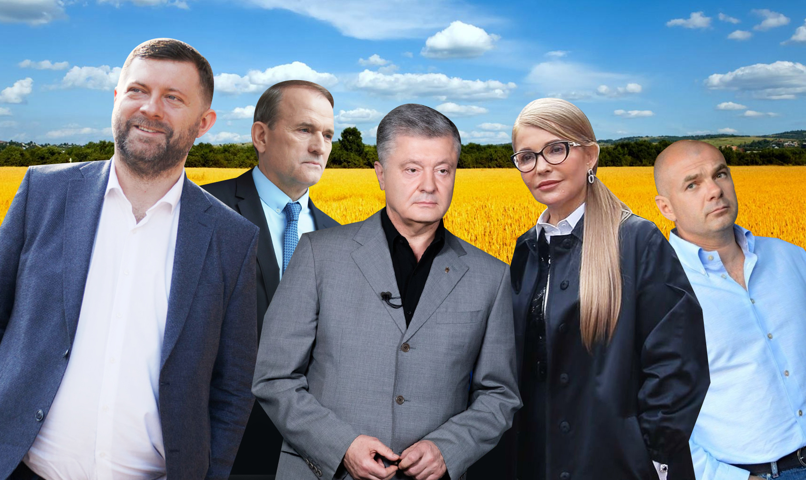
Всі по місцях! Які партії претендують на найбільшу кількість мандатів у місцевих радах
Політика — Дмитро Черетун, "ЧЕСНО"
Реклама:

Реклама:
СПЕЦПРОЄКТ
Інвестиції без страху, або як відкрити нові можливості для бізнесу в кризу
Партнер проєкту - Європейський союз
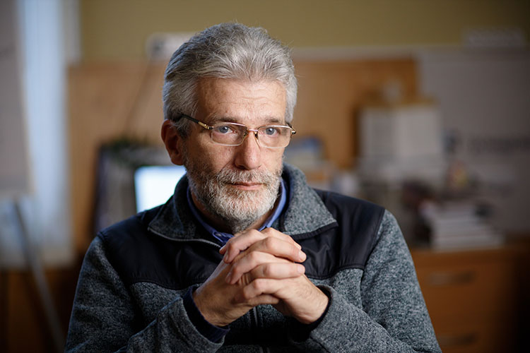
"Ми не усвідомлюємо, що працюємо для аудиторії": інтерв'ю Андрія Куликова про журналістику в Україні
"Країна фактично розграбована, землю уже поділили". Інтерв'ю з головою Держгеокадастру
Економічна правда — Оксана Пирожок, Дмитро Дєнков
Подкаст "Я не встигаю": Як боротися з прокрастинацією? Гості епізоду: Маша Сєбова, Алла Рожкова
Подкасти — Федір Попадюк, Анастасія Коріновська
Купуй російське: як в Україні продають автомобілі з РФ
Економічна правда — Володимир Рихліцький

Стус без шансу на захист: ведмежа послуга Медведчука
Політика — Роман Титикало, Ілля Костін

ВАКАНСІЯ
Українська правда шукає Project Manager у комерційний відділ
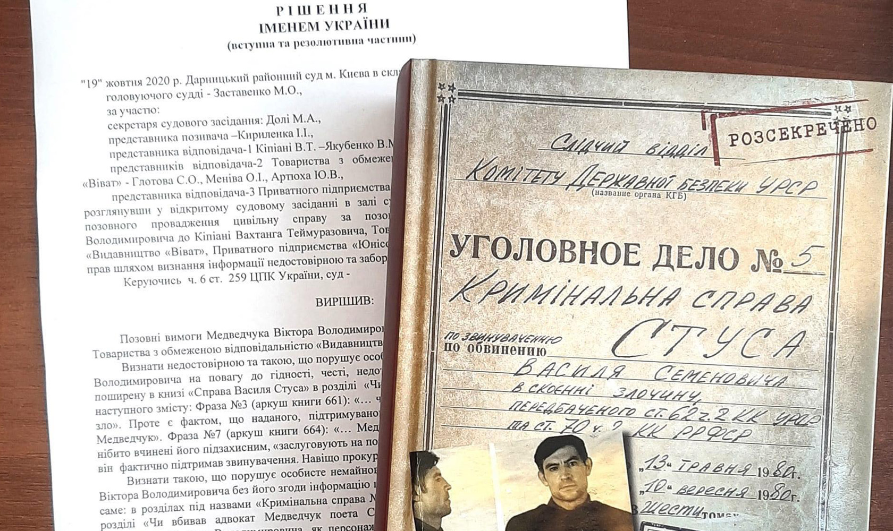
Чи вбивав адвокат Медведчук поета Стуса? Публікуємо заборонену судом главу книги
Політика — Вахтанг Кіпіані
Кличка "підкинули" на вибори: що не так з придбаними Києвом білоруськими автобусами
Політика — Вахтанг Кіпіані
Спіраль розчарувань: погляд із Польщі на кризу у відносинах з Україною
Європейська правда — Лукаш Адамський
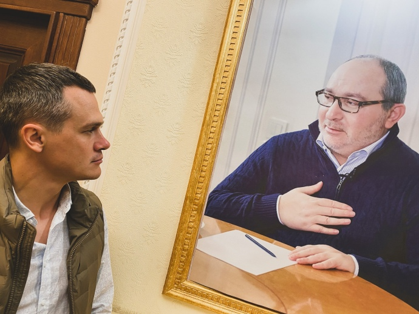
Коронавірус проти Кернеса. Як COVID-19 змінив вибори в Харкові
Політика — Роман Романюк
Маніпуляції на ринку електроенергії

Місто збудовано, а води немає, або Чому ірпінська вода потребує системних рішень
Банкрутство не для всіх: перші підсумки нової процедури
Acta non verba, пане президенте!
Чому Байден буде змушений не надто цікавитись Україною
Чому Україна має боротись із змінами клімату?
О предвыборном послании президента

Спецпроєкти
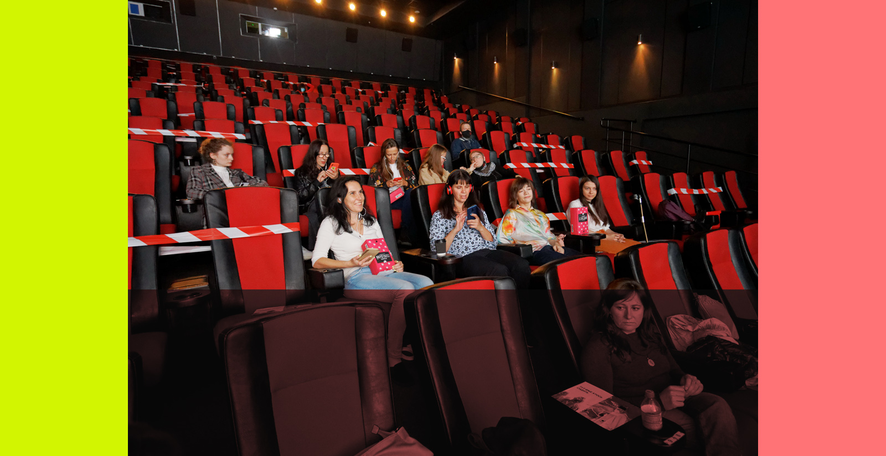
(По)бачити і (по)чути: як кіно стає доступним для всіх
Кіно, мюзикл, правда: українець та британка створюють проєкт про шахтарів Донбасу
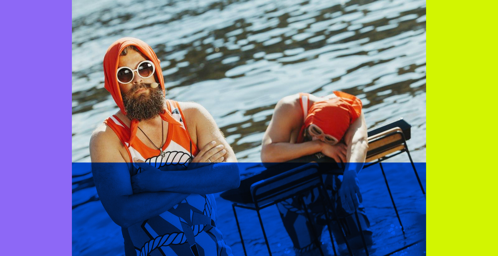
Найбільший фестиваль карантину. Як InterCity Live об’єднав організаторів з усієї країни